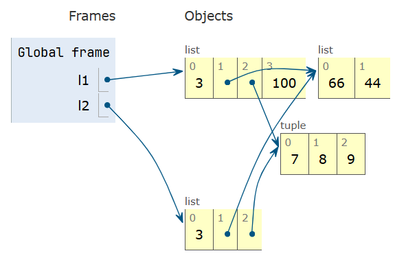
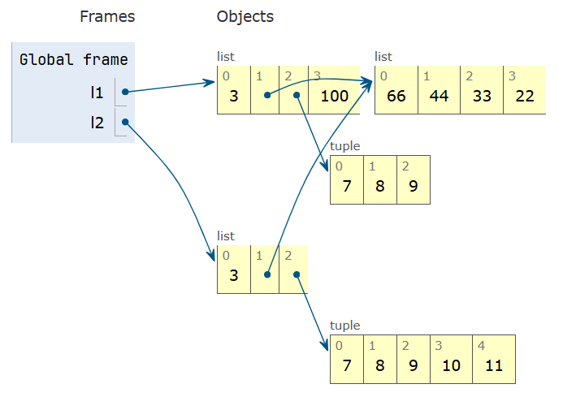

Chap 1：数据结构⚓︎
约 16244 个字 551 行代码 预计阅读时间 88 分钟
Python 数据模型⚓︎
Python 数据模型是 Python 语言的 API，确立序列、函数、迭代器、协程、类、上下文管理器等部分的行为，而这些行为则依靠特殊方法（又称“魔术方法”）实现。
- 特殊方法的名称前后两端都有双下划线，比如
__getitem__、__len__等 -
自定义对象发生以下行为时都会用到特殊方法：
- 容器
- 属性存取
- 迭代（包括使用
async的异步迭代） - 运算符重载
- 函数和方法调用
- 字符串表示形式和格式化
- 使用
await的一步变成 - 对象创建和解构
- 使用
with和async with语句管理上下文
-
数据模型 & 特殊方法的好处：
- 不需要记住标准操作的方法名称（获取项数可以直接用
len()，而不用什么.size()、.length()之类的） - 可以充分利用 Python 标准库，无须重新造轮子
- 不需要记住标准操作的方法名称（获取项数可以直接用
-
一般情况下，特殊方法供 Python 解释器调用，而非用户
- 因此在编写代码一般不会直接调用特殊方法（唯一的例外是
__init__方法） ，而是调用对应的内置函数，这些函数通常速度更快，且提供额外服务 - 对于内置类型，Python 解释器有时可以直接读取其 C 语言底层实现中的结构体字段，而无需调用方法（一种 shortcut
） （比如len(my_object)会直接读取ob_size字段的值（当my_object是某个内置类型的实例时） ）
- 因此在编写代码一般不会直接调用特殊方法（唯一的例外是
-
很多时候，特殊方法是隐式调用的（比如
for i in x:语句会间接调用x.__iter__()（如果有）或x.__getitem__()方法） -
特殊方法的核心用途：
- 模拟数值类型：
+->__add__，*->__mul__，...- 运算符重载
- 对象的字符串表示形式：
repr()->__repr__：获取对象的字符串表现形式- 若自定义类
myClass未定义该方法，该类下的实例在控制台上只能以类似<myClass object at 0x12345678>的形式呈现 - 在表达式求值结果上调用
repr函数的效果类似格式化字符串（%运算符或str.format方法） - 自己实现
__repr__方法时，建议在 f 字符串中使用!r，以标准的表示形式显示变量类型 __repr__方法返回的字符串应当没有歧义，最好与源码保持一致，方便重新创建所表示的对象
- 若自定义类
str()->__str__：返回对终端用户友好的字符串
- 对象的布尔值：
bool()->__bool__（TrueorFalse）- 如果没有实现
__bool__方法，则会尝试调用__len__，若其值为 0，则返回False，否则返回True - 一般也不会直接调用
bool()，因为任何对象都可以直接在布尔值上下文中使用
- 如果没有实现
-
容器 API
- 基本容器类型的 UML 类图，介绍了 Python 中最重要的容器接口

- 图中所有的类都是抽象基类（后面会详细讨论的
） ，斜体方法都是抽象方法（带“抽象”的不能直接创建实例或直接使用，只能通过子类继承间接使用） -
抽象基类
Collection统一顶层的 3 个基本接口，每个容器类型均应实现：Iterable：支持for、拆包和其他迭代方式Sized：支持内置函数lenContainer：支持in运算符
Python 不强制要求具体类继承这些抽象基类中的任何一个
-
Collection有 3 个重要的专用接口：Sequence：规范list和str等内置类型的接口Mapping：被dict、collection.defaultdict等实现Set：是size和frozenset两个内置类型的接口- 它的所有特殊方法实现的都是中缀运算符
- 模拟数值类型：
-
特殊方法汇总（超半数以上的特殊方法用于实现各类运算符
） ：- 表 1：特殊方法名称（不含运算符）
分类 方法名称 字符串（字节）表示形式 __repr____str____format____bytes____fspath__转化为数值 __bool____complex____int____float____hash____index__模拟容器 __len____getitem____setitem____delitem____contains__迭代 __iter____aiter____next____anext____reversed__可调用对象或执行协程 __call____await__上下文管理 __enter____exit____aexit____aenter__构造和解构实例 __new____init____del__属性管理 __getattr____getattribute____setattr____delattr____dir__属性描述符 __get____set____delete____set_name__抽象基类 __instancecheck____subclasscheck__类元编程 __prepare____init_subclass____class_getitem____mro_entries__- 表 2：运算符的符号和背后的特殊方法
运算符分类 符号 方法名称 一元数值运算符 -+abs()__neg____pos____abs__各种比较运算符 <<===!=>>=__lt____le____eq____ne____gt____ge__算术运算符 +-*///%@divmod()round()**pow()__add____sub____mul____truediv____floordiv____mod____matmul____divmod____round____pow__反向算术运算符 （交换算术运算符的操作数） __radd____rsub____rmul____rtruediv____rfloordiv____rmod____rmatmul____rdivmod____rpow__增量赋值算术运算符 +=-=*=/=//=%=@=**=__iadd____isub____imul____itruediv____ifloordiv____imod____imatmul____ipow__按位运算符 &|^<<>>~__and____or____xor____lshift____rshift____invert__反向按位运算符 （交换按位运算符的操作数） __rand____ror____rxor____rlshift____rrshift__增量赋值按位运算符 &=|=^=<<=>>=__iand____ior____ixor____ilshift____irshift__
序列⚓︎
序列可分为容器序列和扁平序列。
- 容器序列：可存放不同类型的项，其中包括嵌套容器，比如
list、tuple、collections.deque- 序列内实际存放的是所包含对象的引用，也就是说序列内的每一项都是引用，不是实际值
- 任何 Python 对象在内存中都有一个包含元数据的标头，比如
float的内存标头有一个值字段ob_fval（双精度）和两个元数据字段ob_refcnt（对象的引用计数）和ob_type（指向对象类型的指针）
- 扁平序列：可存放同种简单类型的项，比如
str、bytes、array.array- 序列存放的是原始机器值，比如字节、整数、浮点数等，更为紧凑
例子


序列还可以按可变性分类，分为：
- 可变序列：
list、bytearray、array.array、collection.deque- 可变序列继承不可变序列的所有方法，并实现了更多方法
- 不可变序列：
tuple、str、bytes
内置的具体序列类型不是 Sequence 和 MutableSequence 抽象基类的子类，而是一种虚拟子类 (virtual subclass)（通过注册将一个类声明为另一个类的子类，而无需直接继承
列表推导式和生成器表达式⚓︎
列表推导式是构建列表的常用技巧，它的形式大致如下所示：
>>> symbols = "$¢£¥€¤"
>>> codes = [ord(symbol) for symbol in symbols if ord(s) > 127]
>>> codes
[162, 163, 165, 8364, 164]
- 列表推导式应保持简短，若超过两行，最好将语句拆开，或者用
for循环重写- Python 会忽略
[]、{}和()内部的换行，因此列表、列表推导式、元组、字典等结构可以分为多行书写，无需使用续行转义符\；并且最后一项后面的逗号将会被忽略（对于元组，建议加上这个逗号；对于只有一个项的元组则必须加上逗号，否则就不是元组了）
- Python 会忽略
- 局部作用域（也适用于生成器表达式
） ：- 列表推导式的
for子句中赋值的变量在局部作用域内，也就是说列表外就无法使用该变量了 - 但使用
:=赋值的变量在列表推导式返回后依然可以访问，它的作用域限定在函数内
- 列表推导式的
-
使用
- 将列表推导式用于多个可迭代对象，可以生成笛卡尔积（每一项都是由可迭代对象中的项构成的元组，列表长度为各个可迭代对象长度的乘积）map和filter两个函数可以实现相同效果，但是会更复杂，且速度并不比列表推导式快。对于上例，等价形式为：例子
# 列表推导式 >>> colors = ['black', 'white'] >>> sizes = ['S', 'M', 'L'] >>> tshirts = [(color, size) for color in colors for size in sizes] >>> tshirts [('black', 'S'), ('black', 'M'), ('black', 'L'), ('white', 'S'), ('white', 'M'), ('white', 'L')] # 等价的双重 for 循环（注意循环顺序） >>> for color in colors: ... for size in sizes: ... print((color, size)) ... ('black', 'S') ('black', 'M') ('black', 'L') ('white', 'S') ('white', 'M') ('white', 'L')
生成器表达式在形式上与列表推导式的唯一差别是将方括号改为圆括号，但它相比列表推导式占用内存空间更少，因为它不会直接构造整个列表，而是逐个生成项。
- 如果生成器表达式是函数唯一的参数，则无需额外的圆括号括起来
接着上面“笛卡尔积”的例子
元组⚓︎
元组 (tuple) 的两大用途：
-
没有字段名称的记录
- 元组的项数固定，且假定顺序固定（否则会破坏元组中字段的含义）
- 拆包 (unpacking) 是常用的操作，用于获取元组中单独的每一项，我们可以将不感兴趣的项赋给虚拟变量
_
例子
# 以下三行都将元组作为记录 >>> lax_coordinates = (33.9425, -118.408056) >>> city, year, pop, chg, area = ('Tokyo', 2003, 32_450, 0.66, 8014) # 拆包 >>> traveler_ids = [('USA', '31195855'), ('BRA', 'CE342567'), ('ESP', 'XDA305856')] # 元组列表 >>> for passport in sorted(traveler_ids): ... print('%s/%s' % passport) ... BRA/CE342567 ESP/XDA305856 USA/31195855 >>> for country, _ in traveler_ids: ... print(country) ... USA BRA ESP -
不可变列表
- 好处：意图清晰（长度固定
） 、性能优越（相比列表占用内存少） -
注意，虽然元组中的引用不可改动，但是如果引用的是可变对象，改动对象后，元组的值也会随之变化。这种存放可变项的元组是不可哈希的，因而这类数组不能作为字典的键或集合的元素
-
利用内置函数
hash判断一个元组的值是否固定（下列代码也适用于其他对象）
- 好处：意图清晰（长度固定
元组相比列表的优势
| 元组 | 列表 |
|---|---|
| 求解元组字面量时，只需一次操作即可生成对应的字节码 | 求解列表字面量时，字节码将每个元素当作独立的变量推入数据栈，然后构建列表 |
给定元组t，tuple(t)直接返回t的引用 |
给定列表l，list(l)创建l的副本 |
| 元组实例长度固定，分配的内存空间正好够用 | 列表实例内存空间会留的更多，应对随时追加的元素 |
| 元组中项的引用存储在元组结构体的一个数组内 | 列表将引用数组的指针存在其他地方，因为列表可以变长；若超出当前分配空间，Python 就要重新分配引用数组来腾出空间，从而导致 CPU 缓存效率低下 |
列表与元组方法比较
| 方法 | 列表 | 元组 | 说明 |
|---|---|---|---|
s.__add__(s2) |
● | ● | s + s2：拼接 |
s.__iadd__(s2) |
● | s += s2：就地拼接 |
|
s.append(e) |
● | 在最后一个元素后追加一个元素 | |
s.clear() |
● | 删除所有项 | |
s.__contains__(e) |
● | ● | e in s |
s.copy() |
● | 浅拷贝列表 | |
s.count(e) |
● | ● | 计算元素出现的次数 |
s.__delitem__(p) |
● | 删除位置 p 上的项 |
|
s.extend(it) |
● | 追加可迭代对象 it 中的项 |
|
s.__getitem__(p) |
● | ● | s[p]：获取指定位置上的项 |
s.__getnewargs__() |
● | 支持使用 pickle 优化序列化 |
|
s.index(e) |
● | ● | 找出 e 首次出现的位置 |
s.insert(p, e) |
● | 在位置 p 上的项之前插入元素 e |
|
s.__iter__() |
● | ● | 获取迭代器 |
s.__len__() |
● | ● | len(s)：项数 |
s.__mul__() |
● | ● | s * n：重复拼接 |
s.__imul__() |
● | s *= n：就地重复拼接 |
|
s.__rmul__() |
● | ● | n * s：反向重复拼接 |
s.pop([p]) |
● | 移除并返回最后一项或可选的位置 p 上的项 |
|
s.remove(e) |
● | 把 e 的值从首次出现的位置上移除 |
|
s.reverse() |
● | 就地翻转项的顺序 | |
s.__reversed__() |
● | 获取逆序的迭代器 | |
s.__setitem__(p, e) |
● | s[p] = e：把 e 放在位置 p 上，覆盖现有的项 |
|
s.sort([key], [reverse]) |
● | 就地排序，key 和 reverse 是可选的关键字参数 |
拆包⚓︎
拆包 (unpacking)：获取序列中单独的项
-
并行赋值 (parallel assignment)：把可迭代对象中的项赋给变量元组，形如：
>>> lax_coordinates = (33.9435, -118.408056) >>> lattitude, longitude = lax_coordinates >>> lattitude 33.9435 >>> longitude -118.408056- 利用拆包可以轻松交换两个变量的值：
a, b = b, a - 也可以利用拆包接收函数的多个返回值
- 利用拆包可以轻松交换两个变量的值：
-
*号的两种用法-
在变量前加上前缀
*，该变量便可以捕获余下任意数量的参数，常用于并行赋值- 但是
*前缀同时只能用于一个变量，但可以是任意位置上的变量
- 但是
-
在函数的参数 / 列表、元组或集合字面量上使用前缀
*，可以对其进行拆包- 可以多次使用
*
- 可以多次使用
-
-
拆包的对象可以嵌套，若嵌套结构能够对应起来，那么 Python 就可以正确处理了
模式匹配⚓︎
模式匹配是 Python 3.10 新增的功能，它由 match/case 语句实现，类似 C 语言的 switch/case，但是更为强大。
例子
metro_areas = [
('Tokyo', 'JP', 36.933, (35.689722, 139.691667)),
('Delhi NCR', 'IN', 21.935, (28.613889, 77.208889)),
('Mexico City', 'MX', 20.142, (19.433333, -99.133333)),
('New York-newark', 'US', 20.104, (40.808611, -74.020386)),
('Sao Paulo', 'BR', 19.649, (-23.547778, -46.635833)),
]
def main():
print(f'{"":15} | {"lattitude":>9} | {"longitude":>9}')
for record in metro_areas:
match record:
case [name, _, _, (lat, lon)] if lon <= 0:
print(f'{name:15} | {lat:9.4f} | {lon:9.4f}')
if __name__ == '__main__':
main()
match关键字后面的表达式称为匹配对象 (subject)（一般为序列，包括list、tuple、memoryview、range、array.array和collections.deque）- 匹配对象会与依次尝试与
case子句中的模式（一般为序列）匹配，若匹配得上，则执行子句内的语句，随后退出；若不匹配，则继续尝试匹配下一个case子句，直到最后一个- 可以在最后设置这样的
case子句：case _:，用于处理默认或异常情况（类似 C 语言的default子句） ，这是一个不错的习惯 - 还可以为
case子句设置可选的，由if关键字指定的卫语句 (guard clause)，用于设置额外的匹配条件（比如上例中的if lon <= 0 - 序列模式可以是元组或列表，或任意形式的嵌套元组或列表，因为序列模式中圆括号和方括号无区别
- 但在
match/case上下文中，str、bytes和bytearray实例不作为序列处理，而被视为“原子值”，以避免意想不到的 bug - 模式中的
_可用于匹配相应位置的任意一项，但不绑定匹配值；此外_是唯一可在模式中出现多次的变量*_匹配任意数量的项，且不绑定匹配值；而*extra则将匹配值绑定到变量extra上- 在序列模式中，一个序列只能有一个
*，嵌套的序列也遵从这个规则
- 模式中的任一部分均可使用
as关键字绑定到变量上（比如case [name, _, _, (lat, lon) as coord]:，此时coord == (lat, lon)） - 还可以为模式的每项添加类型信息——借用了构造函数调用的语法，但在模式上下文中仅用于检查类型（比如
case [str(name), _, _, (float(lat), float(lon))]:）
- 可以在最后设置这样的
切片⚓︎
- 切片和区间（
range）不包括最后一项的原因- 容易判断切片或区间的长度，比如
range(3)和my_list[:3]都只有 3 项 - 方便在索引
x处将序列拆成不重叠的两部分，比如my_list[:x]和my_list[x:]
- 容易判断切片或区间的长度，比如
- 切片可以指定步长（
s[a:b:c]中的c） ，可正可负（负数表示逆向） -
实际上，切片的索引是一个切片对象（在
s[a:b:c]中切片对象为slice(a, b, c)）- 可以为切片对象命名，提升代码可读性
例子
invoice = """ 0.....6.................................40...........52...55........ 1909 Pimoroni PiBrella $17.50 3 $52.50 1489 6mm Tactile Switch x20 $4.95 2 $9.90 1510 Panavise Jr. - PV-201 $28.00 1 $28.00 1601 PiTFT Mini Kit 320x240 $34.95 1 $34.95 """ SKU = slice(0, 6) DESCRIPTION = slice(6, 40) UNIT_PRICE = slice(40, 52) QUANTITY = slice(52, 55) ITEM_TOTAL = slice(55, None) line_items = invoice.split('\n')[2:] for item in line_items: print(item[UNIT_PRICE], item[DESCRIPTION]) -
[]内可接受多个索引或切片，以逗号分隔，相关的特殊方法__getitem__和__setitem__会将这多个索引或切片看作一个元组- 在 Numpy 中，
numpy.ndarray表示的二维数组可用a[i, j]获取数组元素，还可用a[m:n, k:l]获取二维切片 - 但除了
memoryview外，Python 内置序列类型都是一维的，因此仅支持一个索引或切片，不支持索引或切片元组 - 省略号（
...，三个句点，ellipsis类中Ellipsis对象的别名）也可作为索引、切片或函数参数- 在 Numpy 中，省略号常作为快捷句法，比如在多维切片中，对于四维数组
x，x[i, ...] == x[i, :, :, :,]
- 在 Numpy 中，省略号常作为快捷句法，比如在多维切片中，对于四维数组
- 在 Numpy 中，
-
使用切片更改可变序列的部分项
- 若赋值目标为一个切片，则右边必须是一个可迭代对象
例子
>>> l = list(range(10))
>>> l
[0, 1, 2, 3, 4, 5, 6, 7, 8, 9]
>>> l[2:5] = [20, 30]
>>> del l[5:7]
>>> l
[0, 1, 20, 30, 5, 8, 9]
>>> l[3::2] = [11, 22]
>>> l
[0, 1, 20, 11, 5, 22, 9]
>>> l[2:5] = 100
Traceback (most recent call last):
File "<python-input-67>", line 1, in <module>
l[2:5] = 100
~^^^^^
TypeError: must assign iterable to extended slice
>>> l[2:5] = [100]
>>> l
[0, 1, 100, 22, 9]
拼接⚓︎
拼接用到的运算符是 + 和 *，功能为：
+：拼接两个同类型序列，且都不可修改，拼接结果为同类型的新序列-
*：序列 * 整数 -> 多次拼接同一个序列，结果为一个新创建的序列- 若序列内包含可变项，则乘法操作后会得到多个指向同一可变项的引用，而非独立的副本
例子
>>> weird_board = [['_'] * 3] * 3 # 实际上这是一种浅拷贝 >>> weird_board [['_', '_', '_'], ['_', '_', '_'], ['_', '_', '_']] >>> weird_board[1][2] = 'O' >>> weird_board [['_', '_', 'O'], ['_', '_', 'O'], ['_', '_', 'O']] # 等价操作为： >>> row = ['_'] * 3 >>> board = [] >>> for i in range(3): ... board.append(row)如果想要得到独立的可变项副本，则需要用到列表推导式或生成器表达式
这两种操作均不会修改操作数本身。但若想通过拼接就地修改序列，则使用这些运算符对应的增量赋值形式 += 和 *=
- 用于可变序列时，仅在原可变序列的基础上增添新项；而用于不可变序列（除字符串外）时，则会重新创建一个新序列，因此效率较低
一个关于 += 运算符的谜题
排序⚓︎
与排序相关的方法或函数：
list.sort方法：就地排序列表，不创建副本，返回值为None- 使用这种返回值的好处是让用户知道接收者已被更改，没有创建新对象；坏处是这使得该方法不能级联调用
sorted()函数：返回新创建的排好序的列表，且可接收任何可迭代对象作为参数，但不会改变原可迭代对象的内容
它们均接受两个可选的关键词参数：
reverse：值为True时按降序排序，默认值为Falsekey：一个单参数的函数，作用于每个项，作为排序依据，默认值是恒等函数（即比较项本身） 。比如key=str.lower执行不区分大小写的排序，而key=len按字符长度为字符串排序- 使用
key参数后，即使列表内的项类型不同，也可以参与排序 - 这个参数类似 C 语言
qsort()中的比较函数（接受双参数） ，但是key参数效率更高，因为它指定的函数仅为每一项调用一次（时间复杂度 \(O(N)\)） ，而双参数比较函数则要在每次比较时调用一次（时间复杂度 \(O(N^2)\)）
- 使用
Python 主要使用的排序算法是 Timsort，这是一种自适应算法，可根据数据的排序方式在插入排序和归并排序之间切换。
其他序列⚓︎
数组⚓︎
若列表中只包含同种类型的数值，那么使用数组类型 array.array 会更加高效。
虽然常说列表可以存放各种类型的项，但是这么做往往是没有意义的，因为包含不同类型项的列表无法使用某些方法或函数，比如没法排序。
- 除了支持所有可变序列的操作外，还有快速加载项和保存项的方法
- 数组存放的不是完整的数值类型实例，而是相应机器值的压缩字节
-
创建
array对象时需提供类型代码，用单个字母表示，比如：b：8 位符号整数（对应 C 语言的signed char，范围为 -128~127）h：16 位符号整数d：双精度浮点数
-
访问（读 / 写）用
array方法创建的二进制文件比存储相同内容的文本文件的速度快得多，且存储空间更小
list 和 array 的方法及属性比较
| 方法或属性 | list |
array |
说明 |
|---|---|---|---|
s.__add__(s2) |
● | ● | s + s2：拼接 |
s.__iadd__(s2) |
● | ● | s += s2：就地拼接 |
s.append(e) |
● | ● | 在末尾追加元素 |
s.byteswap() |
● | 交换数组中所有项的字节，转换字节序 | |
s.clear() |
● | 删除所有项 | |
s.__contains__() |
● | ● | e in s |
s.copy() |
● | 浅拷贝列表 | |
s.__copy__() |
● | 为 copy.copy 提供支持 |
|
s.count(e) |
● | ● | 计算元素出现次数 |
s.__deepcopy__() |
● | 为优化 copy.deepcopy 提供支持 |
|
s.__delitem__(p) |
● | ● | 删除位置 p 上的项 |
s.extend(it) |
● | ● | 追加可迭代对象 it 中的项 |
s.frombytes(b) |
● | 追加字节序列中的项（解释为压缩机器值） | |
s.fromfile(f, n) |
● | 追加二进制文件 f 中的 n 项（解释为压缩机器值） |
|
s.fromlist(l) |
● | 追加列表中的项；一旦抛出 TypeError，一项也不追加 |
|
s.__getitem__(p) |
● | ● | s[p]：获取指定位置上的项或切片 |
s.index(e) |
● | ● | 查找 e 首次出现的位置 |
s.insert(p, e) |
● | ● | 在 p 位置上的项之前插入元素 e |
s.itemsize |
● | 数组中每一项的字节长度 | |
s.__iter__() |
● | ● | 获取迭代器 |
s.__len__() |
● | ● | len(s)：项数 |
s.__mul__() |
● | ● | s * n：重复拼接 |
s.__imul__() |
● | ● | s *= n：就地重复拼接 |
s.__rmul__() |
● | ● | n * s：反向重复拼接 |
s.pop([p]) |
● | ● | 删除并返回位置 p 上的项（默认为最后一项） |
s.remove(e) |
● | ● | 把 e 的值从首次出现的位置上删除 |
s.reverse() |
● | ● | 就地翻转项的顺序 |
s.__reversed__() |
● | 获取从后向前遍历项的迭代器 | |
s.__setitem__(p, e) |
● | ● | s[p] = e：把 e 放在位置 p 上，覆盖现有的项或切片 |
s.sort([key], [reverse]) |
● | 就地对项排序，key 和 reverse 是可选的关键字参数 |
|
s.tobytes() |
● | 返回项的压缩机器值，结果为一个 bytes 对象 |
|
s.tofile(f) |
● | 把项的压缩机器值存入二进制文件 f |
|
s.tolist() |
● | 返回项的数值对象，结果为一个 list 对象 |
|
s.typecode |
● | 单字符字符串，即项的 C 语言类型 |
memoryview⚓︎
memoryview 是一种共享内存的序列类型，可以在不复制字节的情况下处理数组切片。
memory.cast方法用于改变读写多字节单元的方式，无需移动位，返回值为另一个memoryview对象，但始终共享内存
例子
>>> from array import array
>>> octets = array('B', range(6)) # 创建一个 6 字节的数组
>>> m1 = memoryview(octets)
>>> m1.tolist()
[0, 1, 2, 3, 4, 5]
>>> m2 = m1.cast('B', [2, 3]) # 2 行 3 列
>>> m2.tolist()
[[0, 1, 2], [3, 4, 5]]
>>> m3 = m1.cast('B', [3, 2]) # 3 行 2 列
>>> m3.tolist()
[[0, 1], [2, 3], [4, 5]]
>>> m2[1, 1] = 22
>>> m3[1, 1] = 33
>>> octets
array('B', [0, 1, 2, 33, 22, 5]) # 证明 octets, m1, m2, m3 之间的内存是共享的
# 修改一个 16 位整数数组中某一项的字节，从而改变该项的值
>>> import array
>>> numbers = array.array('h', [-2, -1, 0, 1, 2])
>>> memv = memoryview(numbers)
>>> len(memv)
5
>>> memv[0]
-2
>>> memv_oct = memv.cast('B')
>>> memv_oct.tolist()
[254, 255, 255, 255, 0, 0, 1, 0, 2, 0] # 补码 + 小端序
>>> memv_oct[5] = 4
>>> numbers
array('h', [-2, -1, 1024, 1, 2])
Numpy⚓︎
NumPy 是 Python 的核心科学计算库，提供高效的多维数组对象和工具，支持大规模数据操作、数学计算及线性代数等，广泛应用于数据分析、机器学习等领域。
这里仅稍微提一下 Numpy，更具体的用法可参考官方文档。
numpy.arrange(n)：创建一个包含 0~n-1（整数）的numpy.ndarray对象.shape：查看数组维度.shape = a, b：改变数组维度.transpose()：转置数组（行列交换）numpy.loadtxt(filename)：从文本文件加载数据numpy.save(filename)：将数组保存到 .npy 二进制文件中（无需指出后缀名）numpy.load(filename, method)：以method方法（比如r+）从 .npy 二进制文件中读取数组
双端队列和其他队列⚓︎
collections.deque 实现一种线程安全的双端队列，旨在快速在两端插入和删除项（但删除中间项的速度不快
- 用
deque()构造函数创建双端队列时，可以用可选（且只读）的maxlen参数设定deque实例的最大长度。当队列填满时，从一端插入项，就会从另一端丢弃相等数量的项
list 和 deque 方法比较
| 方法 | 列表 | 元组 | 说明 |
|---|---|---|---|
s.__add__(s2) |
● | s + s2：拼接 |
|
s.__iadd__(s2) |
● | ● | s += s2：就地拼接 |
s.append(e) |
● | ● | 在右端（最后）追加一个元素 |
s.appendleft(e) |
● | 在左端（开头）追加一个元素 | |
s.clear() |
● | ● | 删除所有项 |
s.__contains__(e) |
● | e in s |
|
s.copy() |
● | 浅拷贝列表 | |
s.__copy__() |
● | 为 copy.copy（浅拷贝）提供支持 |
|
s.count(e) |
● | ● | 计算元素出现的次数 |
s.__delitem__(p) |
● | ● | 删除位置 p 上的项 |
s.extend(i) |
● | ● | 把可迭代对象 i 中的项追加到右端 |
s.extendleft(i) |
● | 把可迭代对象 i 中的项追加到左端 |
|
s.__getitem__(p) |
● | ● | s[p]：获取指定位置上的项或切片 |
s.index(e) |
● | 找出 e 首次出现的位置 |
|
s.insert(p, e) |
● | 在位置 p 上的项之前插入元素 e |
|
s.__iter__() |
● | ● | 获取迭代器 |
s.__len__() |
● | ● | len(s)：项数 |
s.__mul__() |
● | s * n：重复拼接 |
|
s.__imul__() |
● | s *= n：就地重复拼接 |
|
s.__rmul__() |
● | n * s：反向重复拼接 |
|
s.pop([p]) |
● | ● | 移除并返回最后一项或可选的位置 p 上的项 |
s.popleft() |
● | 移除并返回第一项 | |
s.remove(e) |
● | ● | 把 e 的值从首次出现的位置上移除 |
s.reverse() |
● | ● | 就地翻转项的顺序 |
s.__reversed__() |
● | ● | 获取逆序的迭代器 |
s.rotate(n) |
● | 把 n 项从一端移到另一端 |
|
s.__setitem__(p, e) |
● | ● | s[p] = e：把 e 放在位置 p 上，覆盖现有的项 |
s.sort([key], [reverse]) |
● | 就地排序，key 和 reverse 是可选的关键字参数 |
Python 标准库还提供以下队列实现：
queue：提供几个同步（即线程安全）队列类：SimpleQueue、Queue、LifoQueue和PriorityQueue- 除
SimpleQueue外，其他类都可以通过maxsize参数（设置正整数）来设置边界
- 除
multiprocessing：单独实现SimpleQueue和Queue，还提供专用的JoinableQueueasyncio：提供Queue、LifoQueue、PriorityQueue和JoinableQueue，但为管理异步编程任务而做了修改heapq：没有实现任何队列类，仅提供heappush和heappop等函数
注
如果在代码中经常检查容器中是否存在某一项（使用 in 操作符set 作为存储容器，因为 Python 为 set 成员检查做了优化，速度更快。但注意 set 不是序列，因为里面的项是无序的。
字典和集合⚓︎
所有 Python 程序都会用到字典，因为：
- 一些 Python 核心结构在内存中以字典的形式存在，比如类和实例属性、模块命名空间，以及函数的关键字参数
__builtin__.__dict__存储所有内置类型、对象和类
字典和集合的底层实现均依赖哈希表。
字典和映射⚓︎
字典是 Python 最常用的映射类型，所以适用于映射的方法也一定适用于字典。下面介绍的内容不会对字典和映射做出明显区分。
字典推导式⚓︎
直接看例子：
例子
>>> dial_codes = [
... (880, 'Banladesh'),
... (55, 'Brazil'),
... (86, 'China'),
... (91, 'India'),
... (62, 'Indonesia'),
... (81, 'Japan'),
... (234, 'Nigeria'),
... (92, 'Pakistan'),
... (7, 'Russia'),
... (1, 'United States'),
... ]
>>> country_dial = {country : code for code, country in dial_codes}
>>> country_dial
{'Banladesh': 880, 'Brazil': 55, 'China': 86, 'India': 91, 'Indonesia': 62, 'Japan': 81, 'Nigeria': 234, 'Pakistan': 92, 'Russia': 7, 'United States': 1}
>>> {code : country.upper()
... for country, code in sorted(country_dial.items())
... if code < 70}
{55: 'BRAZIL', 62: 'INDONESIA', 7: 'RUSSIA', 1: 'UNITED STATES'}
映射拆包⚓︎
** 前缀用于映射的拆包，可以应用在：
-
函数参数：
**可用于多个参数，但要求所有键都是字符串且是唯一的，这类参数可用于捕获没有明确指定名称的关键字参数 -
dict字面量：也可以多次使用**，且允许键重复（后面的键会覆盖前面同名的键）
合并映射⚓︎
|运算符用于合并两个映射，返回合并后的新映射- 新映射的类型与左操作数的类型一致，但涉及到用户定义的类型时，也可能与右操作数的类型一致
|=增量运算符用于就地合并映射
例子
模式匹配⚓︎
在“序列”一节介绍的 match/case 语句的匹配对象也可以是映射，而映射的模式看似是 dict 字面量，实则能匹配 collections.abc.Mapping 的任何具体子类或虚拟子类。
- 不同类型的模式可以组合和嵌套，因为借助解构可以处理嵌套的映射和序列等结构化记录（JSON API（除了
true、false和null拼写不同外，JSON 与 Python 完全兼容） 、半结构化的数据库等） - 模式中键的顺序无关紧要（即便匹配对象是一个
OrderedDict） - 不同于序列模式，只要匹配对象中的一部分能够与映射模式完全匹配，那么就视为成功匹配
- 因此没有必要使用
**extra匹配多余的键值对，若需要的话请将**extra放在模式的末尾；而**_是无效的 - 虽然通过
__getitem__方法（d[key]）在映射中查找键时会始终成功（因为若键不存在则会自动创建） ，但是在模式匹配中，仅当匹配对象在运行match语句之前已经含有所需的键
例子
def get_creator(record: dict) -> list:
match record:
case {'type': 'book', 'api': 2, 'authors': [*names]}:
return names
case {'type': 'book', 'api': 1, 'author': name}:
return [name]
case {'type': 'book'}:
raise ValueError(f"Invalid 'book' record: {record!r}")
case {'type': 'movie', 'director': name}:
return [name]
case _:
raise ValueError(f"Invalid record: {record!r}")
自动处理缺失的键⚓︎
有两种方法：
- 用
defaultdict替代普通的dict：若用d[k]（__getitem__方法）找不到键，那么collections.defaultdict会使用指定的默认值（调用default_factory生成缺失的值）创建对应的项 - 定义
dict或其他映射类型的子类，实现__missing__方法（dict本身无法直接调用该方法） 。但不同映射类型对查找缺失键的行为不一致：dict子类：只有d[k]（__getitem__方法）会调用__missing__方法collections.UserDict子类：d[k]和d.gets(k)在查找确实键时会调用__missing__方法abc.Mapping子类- 以最简单的方法实现
__getitem__方法：此时永不触发__missing__方法 - 让
__getitem__调用__missing__：d[k]、d.gets(k)和k in d在查找缺失键时会调用__missing__方法
- 以最简单的方法实现
注意
__missing__ 的实现逻辑容易出错，有时还要以特殊的逻辑实现 __setitem__，以免行为不一致或出现意外错误。
例子
其他映射类型⚓︎
collections.OrderedDict：保留键顺序的字典。但是自 Python 3.6 起，dict也具备保留键顺序的功能，因此该映射类型用途变得不是很大。尽管如此，它与普通的dict还有以下的一些差异（按日常使用频率排序） ：OrderedList的等值检查考虑顺序OrderedList的popitem()可通过一个可选参数指定移除哪一项OrderedList多了一个move_to_end()方法，便于把元素的位置移到某一端- 从算法上看，
OrderedList处理频繁重新排序操作的效果比dict好，因此更适合用于跟踪近期存取情况（比如用于 LRU 缓存中）
-
collections.ChainMap：存放一组映射-
查找时将这些映射看作一个整体，且根据在构造函数中出现的顺序依次查找，一旦找到指定的键就结束了
-
ChainMap实例里实际上存的是映射的引用，且ChainMap的更新或插入操作仅影响首个输入映射 -
应用：实现支持嵌套作用域的语法解释器，按嵌套层级从内到外，一个映射表示一个作用域环境
-
-
collections.Counter：一种对键计数的映射，更新现有的键，计数随之增加- 方法：
.most_common([n])：返回一个有序元组列表，包括前n个计数值最大的项及其数量
例子
- 应用：统计可哈希对象的实例数量、多重集 (multiset)
- 方法：
-
shelve.Shelf：持久存储字符串键（以pickle二进制格式序列化的）与 Python 对象（可被pickle模块序列化）之间的映射shelve.open返回一个shelve.Shelf实例（一个简单的键值 DBM 数据库，背后是dbm模块）shelve.Shelf不仅提供映射类型的基本方法，还提供了一些 I/O 管理方法，比如sync和closeShelf实例是上下文管理器，因此可用with块确保在使用后关闭
-
collection.UserDict：用于创建新的映射类型- 自定义映射类型时应继承这个映射类型，而不是
dict UserDict内部有一个dict实例，名为data，用于存放具体的值，这样可避免__setitem__等特殊方法意外递归，还能简化__contains__的实现
- 自定义映射类型时应继承这个映射类型，而不是
此外，关于映射类型的抽象基类 MutableMapping 和 Mapping 提供了一些有用的方法：
MutableMapping.update：使用self[key] = value添加项，最终调用子类实现的__setitem__Mapping.get
不可变映射⚓︎
标准库提供的映射类型都是可变的，但有时我们需要防止用户更改映射。type 模块提供的包装类 MappingProxyType 能将映射包装成一个 mappingproxy 实例（原映射的动态代理
例子
>>> from types import MappingProxyType
>>> d = {1: 'A'}
>>> d_proxy = MappingProxyType(d)
>>> d_proxy
mappingproxy({1: 'A'})
>>> d_proxy[1]
'A'
>>> d_proxy[2] = 'x'
Traceback (most recent call last):
File "<python-input-24>", line 1, in <module>
d_proxy[2] = 'x'
~~~~~~~^^^
TypeError: 'mappingproxy' object does not support item assignment
>>> d[2] = 'B'
>>> d_proxy
mappingproxy({1: 'A', 2: 'B'})
>>> d_proxy[2]
'B'
字典视图⚓︎
dict 的实例方法 .keys()、.values()、.items() 分别返回 dict_keys、dict_values 和 dict_items 类的实例，这些方法合称为字典视图，是 dict 内部实现的数据结构的只读投影（可迭代对象
- 不能使用
[]获取视图中的项 dict_keys、dict_values和dict_items是内部类，不能通过__builtins__或标准库的任何模块获取，尽管可以得到实例，但在 Python 代码中不能自己手动创建dict_values只实现了__len__、__iter__、__reversed__3 种特殊方法- 当且仅当
dict中所有制均可哈希时，dict_items视图才可当作集合使用，否则对dict_items作集合运算将会抛出TypeError: unhashable type 'T'；而dict_keys视图始终可当做集合使用
其余字典视图的集合运算
| 方法 | frozenset |
dict_keys |
dict_items |
说明 |
|---|---|---|---|---|
s.__add__(z) |
● | ● | ● | s & z |
s.__rand__(z) |
● | ● | ● | 反向 & 运算符 |
s.__contains__() |
● | ● | ● | e in s |
s.copy() |
● | ● | ● | 浅拷贝 s |
s.difference(it, ...) |
● | ● | ● | s 和可迭代对象 it 的差集 |
s.intersection(it, ...) |
● | ● | ● | s 和可迭代对象 it 的交集 |
s.isdisjoint(z) |
● | ● | ● | s 和 z 不相交 |
s.issubset(it) |
● | ● | ● | s 和可迭代对象 it 的子集 |
s.issuperset(it) |
● | ● | ● | s 和可迭代对象 it 的超集 |
s.__iter__() |
● | ● | ● | 获取遍历 s 的迭代器 |
s.__len__() |
● | ● | ● | len(s) |
s.__or__() |
● | ● | ● | s | z |
s.__ror__() |
● | ● | ● | 反向 | 运算符 |
s.__reversed__() |
● | ● | ● | 获取逆序遍历 s 的迭代器 |
s.__sub__() |
● | ● | ● | s - z |
s.__rsub__() |
● | ● | ● | 反向 - 运算符 |
s.symmetric_difference(it) |
● | ● | ● | s & set(it) 的补集 |
s.union(it, ...) |
● | ● | ● | s 和可迭代对象 it 的并集 |
s.__xor__() |
● | ● | ● | s ^ z |
s.__rxor__() |
● | ● | ● | 反向 ^ 运算符 |
映射类型的标准 API⚓︎
collections.UserDict 类和标准库中所有具体映射类都在实现中封装了基本的 dict，而 dict 又建立在哈希表之上，因此所有的映射类型的键都是可哈希的——哈希码（用 __hash__() 方法获取）在整个生命周期中永不改变，且可与其他对象比较（使用 __eq__() 方法
- 数值类型、不可变的扁平类型（
str、 bytes） 、不可变且所含对象全是可哈希的容器类型（frozenset）均是可哈希的 - 在不同的 Python 版本或设备架构下，同一对象的哈希码也会有所不同，这是因为计算哈希时采用加盐（生成随机值）处理的方法
实际使用 dict 时需注意：
- 键必须是可哈希的对象
- 通过键访问项的速度非常快（因为哈希）
- Python 3.6 版本以上的
dict会保留项的顺序 - 尽管
dict内存布局紧凑，但仍然会占用大量内存空间（比如要为哈希表留白） - 为节省内存，不要在
__init__方法
常用映射方法
| 方法 | dict |
defaultdict |
OrderedDict |
说明 |
|---|---|---|---|---|
d.clear() |
● | ● | ● | 删除所有项 |
d.__contains__() |
● | ● | ● | k in d |
d.copy() |
● | ● | ● | 浅拷贝 |
d.__copy__() |
● | 为 copy.copy(d) 提供支持 |
||
d.default_factory |
● | 由 __missing__ 调用的可调用对象，用于设置缺失的值（属性而非方法） |
||
d.__delitem__(k) |
● | ● | ● | del d[k]：删除键 k 对应的项 |
d.fromkeys(it, [initial]) |
● | ● | ● | 根据可迭代对象中的键构建一个映射，可选参数 initial 指定初始值（默认为 None） |
d.get(k, [default]) |
● | ● | ● | 获取键 k 对应的项，不存在时返回 default 或 None |
d.__getitem__(k) |
● | ● | ● | d[k]：获取键 k 对应的项 |
d.items() |
● | ● | ● | 获取项视图，即 (key, value) 对 |
d.__iter__() |
● | ● | ● | 获取遍历键的迭代器 |
d.keys() |
● | ● | ● | 获取键视图 |
d.__len__() |
● | ● | ● | len(d)：项数 |
d.__missing__() |
● | 当 __getitem__ 找不到相应的键时调用 |
||
d.move_to_end(k, [last]) |
● | 把 k 移到开头或结尾（last 默认为 True） |
||
d.__or__(other) |
● | ● | ● | d1 | d2：合并 d1 和 d2，新建一个 dict 对象 |
d.__ior__(other) |
● | ● | ● | d1 |= d2：使用 d2 中的项更新 d1 |
d.pop(k, [default]) |
● | ● | ● | 删除并返回 k 对应的项，如果没有键 k，则返回 default 或 None |
d.popitem() |
● | ● | ● | 删除并返回（(key, value) 的形式）最后插入的项 |
d.__reversed__() |
● | ● | ● | reversed(d)：按插入顺序逆向遍历键的迭代器 |
d.__ror__(other) |
● | ● | ● | other | dd：反向合并运算符 |
d.setdefault(k, [default]) |
● | ● | ● | 若 d 中有键 k，则返回 d[k]；否则，把 d[k] 设为 default，并返回 default |
d.__setitem__(k, v) |
● | ● | ● | d[k] = v：把键 k 对应的值设为 v |
d.update(m, [**kwargs]) |
● | ● | ● | 使用映射或可迭代对象中的键值对更新 d |
d.values() |
● | ● | ● | 获取值视图 |
集合⚓︎
集合是一个不包含重复项的容器，包括 set 类型以及不可变形式 frozenset。
- 集合元素必须是可哈希的对象，但
set类型本身不可哈希，而frozenset类型是可哈希的 -
集合类型提供了许多集合运算（并 / 交 / 差 / 对称差 ...
） ，巧妙使用这些运算可以减少代码量，缩短程序运行时间 -
set字面量用{}括起来；但是空集合没有字面量表示法，必须写作set()。字面量表示法速度快，且可读性强 frozenset也没有字面量表示法，必须用构造函数创建-
集合推导式：与列表推导式在形式上的区别就是将方括号改为花括号
-
实际使用集合时需注意：
- 集合元素必须是可哈希的对象
- 成员测试效率非常高
- 与字典类似，集合也占用大量内存
- 集合内不考虑顺序
- 向集合添加元素后，现有元素的顺序可能会发生改变
-
集合运算
-
集合数学运算
表格
数学符号 Python 运算符 方法 说明 \(S \cap Z\) s & zs.__and__(z)s和z的交集z & ss.__rand__(z)反向 &运算符s.itersection(it, ...)s和根据可迭代对象it等构建的集合的交集s &= zs.__iand__(z)使用 s和z的交集更新ss.intersection_update(it, ...)使用 s和根据可迭代对象it等构建的集合的交集更新s\(S \cup Z\) s | zs.__or__(z)s和z的并集z | ss.__ror__(z)反向 |运算符s.union(it, ...)s和根据可迭代对象it等构建的集合的并集s |= zs.__ior__(z)使用 s和z的并集更新ss.update(it, ...)使用 s和根据可迭代对象it等构建的集合的并集更新s\(S - Z\) s - zs.__sub__(z)s和z的差集z - ss.__rsub__(z)反向 -运算符s.difference(it, ...)s和根据可迭代对象it等构建的集合的差集s -= zs.__isub__(z)使用 s和z的差集更新ss.difference_update(it, ...)使用 s和根据可迭代对象it等构建的集合的差集更新s\(S \Delta Z\) s ^ zs.__xor__(z)对称差集（ s & z的补集）z ^ ss.__rxor__(z)反向 ^运算符s.symmetric_difference(it)s & set(it)的补集s ^= zs.__ixor__(z)使用 s和z的对称差集更新ss.symmetric_difference_update(it, ...)使用 s和根据可迭代对象it等构建的集合的对称差集更新s -
集合比较运算
表格
数学符号 Python 运算符 方法 说明 \(S \cap Z = \emptyset\) s.isdisjoint(z)s和z不相交\(e \in S\) e in ss.__contains__(e)元素 e是s的成员\(S \subseteq Z\) s <= zs.__le__(z)s是z的子集s.issubset(it)s是由可迭代对象it构建的集合的子集\(S \subset Z\) s < zs.__lt__(z)s是z的真子集\(S \supseteq Z\) s >= zs.__ge__(z)s是z的超集s.issuperset(it)s是由可迭代对象it构建的集合的超集\(S \supset Z\) s > zs.__gt__(z)s是z的真超集 -
集合的其他方法
表格
方法 setfrozenset说明 s.add(e)● 把元素 e添加到s中s.clear()● 删除 s中的全部元素s.copy()● ● 浅拷贝 ss.discard(e)● 从 s中删除元素e（如果存在e）s.__iter__()● ● 获取遍历 s的迭代器s.__len__()● ● len(s)s.pop()● 从 s中删除并返回一个元素，若s为空，则抛出KeyErrors.remove(e)● 从 s中删除元素e，若e不在s中，则抛出KeyError
-
Unicode 文本和字节序列⚓︎
Unicode 字符串⚓︎
Python 3 中，str 对象中获取的项是 Unicode 字符。下面简单介绍 Unicode 标准：
- 码点 (codepoint)：字符的标识，取值范围是 U+0000~U+10FFFF（U+ 为十六进制前缀）
- 由此可见，一个字符的大小在 1 字节到 3 字节之间
- 在 Python 中，码点可以用形如
'\u0000'的形式表示
- 编码 (code)：码点与字节序列之间转换时使用的算法，比如 UTF-8、UTF-16LE 等
- 编码 (encode)：码点 -> 字节序列，
str对象的对应方法为.decode() - 解码 (decode)：字节序列 -> 码点，
bytes对象的对应方法为.encode()
- 编码 (encode)：码点 -> 字节序列，
- 在 Python 3 中，Unicode 字面量还可以用
\N{}转义字符表示，花括号内填写字符的官方名称，比如：'…'<->'\N{HORIZONTAL ELLIPSIS}''∞'<->'\N{INFINITY}''㊷'<->'\N{CIRCLED NUMBER FORTY TWO}'
字节序列⚓︎
Python 内置 2 类基本的字节序列类型：不可变类型 bytes 和可变类型 bytearray
- 字节序列的项是 0~255 之间的整数（1 字节）
- 字节序列的切片仍然是字节序列，即使是长度为 1 的切片也是字节序列，而非整数
- 事实上，除了
str类型外，对于其余序列类型，一个项 != 长度为 1 的切片
- 事实上，除了
bytes字面量以b开头，后跟对应的字符串形式，而字符串有以下几种显示方式：- 字节项为 32 126（空格波浪号）的整数 -> 使用 ASCII 字符
- 制表符、换行符、回车符、反斜杠符 -> 分别使用转义字符
\t、\n、\r、\\ - 字节序列内同时包含两种引号
'和"-> 整个序列使用'分隔，序列内的'转义为\' - 其他 -> 使用十六进制转义字符（形如
\x00）
bytearray对象没有字面量表示法，而以bytearray()的形式显示，参数是一个bytes字面量- 除了格式化方法
format和format_map，以及处理 Unicode 数据的方法（casefold、isdecimal、isidentifier、isnumeric、isprintable、 encode）外，字节序列支持str的所有方法 -
字节序列独有的方法是
fromhex，用于解析十六进制数字对，构建字节序列 -
字节序列的构造函数（
bytes()和bytearray()）可以接收以下参数（三选一）- 一个
str对象和encoding关键字参数 - 一个可迭代对象，项为 0~255 之间的整数
- 一个实现缓冲协议的对象（例如
bytes、bytearray、memoryview、 array.array） ，构造函数会将其复制到新的字节序列上（可能涉及到类型转换）
- 一个
编码解码器⚓︎
编码解码器 (codec, encoder/decoder)：用于文本和字节之间的相互转换。
- 每个编码解码器都有一个名称（比如
utf_8） ，而且可能会有一些别名（比如utf8、utf-8、 U8） - 这些名称可以传给
open()、str.encode()、bytes.decode()等函数的encoding参数 - 常见的编码有：
latin1/iso8859_1：众多编码（比如cp1252和 Unicode 等）的基础cp1252：微软制定的latin1的超集cp437：IBM PC 最初的字符集，与latin1不兼容gb2312：用于编码简体中文的陈旧标准，亚洲语言使用较广泛的多字节编码之一utf-8：目前 Web 应用最常用的 8 位编码utf-16le：UTF 16 位编码方案的一种形式。所有的 UTF-16 支持通过转移序列（称为“代理对”(surrogate pair)）表示超过 U+FFFF 的码点'le'指的是小端序 (little-endian)：低位字节在前面，高位字节在后面
utf-16be：UTF 16 大端序
处理编码和解码问题⚓︎
与编解码相关的常见报错有：
UnicodeEncodeError：str-> 字节序列时出错- 多数非 UTF 编码解码器只能处理 Unicode 字符的一小部分子集，若在编码过程中，目标编码没有定义某个字符，就会产生这类错误
UnicodeDecodeError：字节序列 ->str时出错- 并非所有字节都包含有效的 ASCII 字符或 Unicode 码点，若解码时采用这两种编码中的一种，遇到无法转换的字节时就会产生这类错误
- 然而，
cp2512、iso8859_1等陈旧的 8 位编码能够解码任何字节而不产生错误。所以，若采用错误的 8 位编码，就会生成乱码（或称为鬼符）而不报错
SyntaxError：源码的编码与预期不符- 若 Python 3 源代码中出现非 UTF-8 字符，且没有声明编码，那么就会产生此类错误
下面分别介绍这 3 类错误的处理方法。
UnicodeEncodeError⚓︎
处理方法为：在 str.encode() 函数中指定关键词参数 errors，它接收字符串值，可以以下几种值之一：
'strict'（默认） ：抛出UnicodeEncodeError错误'ignore'：跳过无法编码的字符- 这种做法往往不太恰当，会导致数据悄无声息地消失
'replace'：无法编码的字符用'?'代替- 虽然也会丢失数据，但至少告诉用户出了问题
'xmlcharrefreplace'：把无法编码的字符替换成 XML 实体
例子
>>> city.encode('cp437')
Traceback (most recent call last):
File "<python-input-28>", line 1, in <module>
city.encode('cp437')
~~~~~~~~~~~^^^^^^^^^
File "...\Python\Python313\Lib\encodings\cp437.py", line 12, in encode
return codecs.charmap_encode(input,errors,encoding_map)
~~~~~~~~~~~~~~~~~~~~~^^^^^^^^^^^^^^^^^^^^^^^^^^^
UnicodeEncodeError: 'charmap' codec can't encode character '\xe3' in position 1: character maps to <undefined>
encoding with 'cp437' codec failed
>>> city.encode('cp437', errors='ignore')
b'So Paulo'
>>> city.encode('cp437', errors='replace')
b'S?o Paulo'
>>> city.encode('cp437', errors='xmlcharrefreplace')
b'São Paulo'
编码解码器的错误处理方式可以扩展——可以为 errors 参数注册额外的字符串，做法是把一个名称和一个错误处理函数传给 codecs.register_error 函数，具体实现见相关文档。
UnicodeDecodeError⚓︎
同上，也可在 bytes.decode() 函数中指定 errors 参数，取值有：
'replace'：用�（Unicode 码点为 U+FFFD，表示未知字符）替代无法转换的字节
为避免解码错误的发生，我们还可以通过以下技巧，从字节序列中找出编码方式：
- 若
\b'\x00'经常出现，那很有可能是 16 位或 32 位编码，而不是 8 位编码，因为纯文本中不能包含空字符 - 若
\b'\x20\x00'经常出现，那就可能是 UTF-16LE 编码中的空格字符 -
采用 Python 第三方库 Chardet，它能识别所支持的多种编码，既可在 Python 程序中使用，也有相应的命令行工具
chardetect -
BOM（byte-order mark，字节序标记
） ：字节序列开头的额外字节，指明编码方式（具体来说是采取哪种编码顺序）- UTF-16 编码下的字节序列，若开头为
b'\xff\xfe'（不可见字符ZERO WIDTH NOBREAK SPACE(U+FEFF)） ，那么采用的是小端序，即 UTF-16LE（Intel x86 架构默认用小端序） 。UTF-16 编码解码器会把开头的这些字符去掉，只提供真正的文本内容- 根据 Unicode 标准，如果采用 UTF-16 编码且没有 BOM，那么应假定使用的是 UTF-16BE（大端序）
- 如果指明了 UTF-16LE 或 UTF-16BE，则不生成 BOM
- BOM 仅对单字符占多字节的编码方式有意义，对 UTF-8 这种单字符单字节的编码就不需要用 BOM 了
- 尽管如此，某些 Windows 应用程序依然会在 UTF-8 编码的文件中添加 BOM，像这种带 BOM 的 UTF-8 编码称为 UTF-8-SIG，字节序列开头为
b'\xef\xbb\xbf'- Python 文档不建议在 UTF-8 编码中添加 BOM
- UTF-16 编码下的字节序列，若开头为
SyntaxError⚓︎
处理方法：
-
在文件顶部添加如下所示的
coding注释： -
最好让源代码采用 UTF-8 编码，这样就不用这多余的注释了
处理文本文件⚓︎
处理文本文件的最佳实践是“Unicode 三明治”原则：
- 上层：输入时解码字节序列（
bytes->str）- 内置函数
open()读取文件时会做必要的解码
- 内置函数
- 中层：只处理文本（100%
str） - 下层：输出时编码文本（
str->bytes）.write(text)方法写入文件时会做必要的编码
关于文件访问的函数或方法：
fp = open(filename, method, encoding='utf_8')：打开文件- 默认采用文本模式（
method不带'b'时） ，返回一个使用指定编码的TextIOWrapper对象 - 若
method带'b'，则表示以二进制模式读取文件，此时返回一个BufferedReader对象- 通常情况下，不要以二进制模式读取文本文件，它一般只用于打开二进制文件
- 默认采用文本模式（
fp.read(encoding='utf_8')：读取文件内容（字符串）fp.write(text, encoding='utf_8')：向文件写入内容（字符串） ，并返回 Unicode 字符数
建议
对于上述函数，请最好指明 encoding 参数，否则的话 Python 会采用默认编码方式，而这很容易会导致错误。
fp.encoding：返回编码方式（字符串）os.stat(filename).st_size：返回文件的字节数（需导入os模块）
例子：查看自己电脑的默认编码方式
执行以下脚本：
import locale
import sys
expressions = """
locale.getpreferredencoding()
type(my_file)
my_file.encoding
sys.stdout.isatty()
sys.stdout.encoding
sys.stdin.isatty()
sys.stdin.encoding
sys.stderr.isatty()
sys.stderr.encoding
sys.getdefaultencoding()
sys.getfilesystemencoding()
"""
my_file = open('dummy', 'w')
for expression in expressions.split():
value = eval(expression)
print(f'{expression:>30} -> {value!r}')
执行结果：
$ python default_encodings.py
locale.getpreferredencoding() -> 'cp936'
type(my_file) -> <class '_io.TextIOWrapper'>
my_file.encoding -> 'cp936'
sys.stdout.isatty() -> True
sys.stdout.encoding -> 'utf-8'
sys.stdin.isatty() -> True
sys.stdin.encoding -> 'utf-8'
sys.stderr.isatty() -> True
sys.stderr.encoding -> 'utf-8'
sys.getdefaultencoding() -> 'utf-8'
sys.getfilesystemencoding() -> 'utf-8'
$ python default_encodings.py
locale.getpreferredencoding() -> 'UTF-8'
type(my_file) -> <class '_io.TextIOWrapper'>
my_file.encoding -> 'UTF-8'
sys.stdout.isatty() -> True
sys.stdout.encoding -> 'utf-8'
sys.stdin.isatty() -> True
sys.stdin.encoding -> 'utf-8'
sys.stderr.isatty() -> True
sys.stderr.encoding -> 'utf-8'
sys.getdefaultencoding() -> 'utf-8'
sys.getfilesystemencoding() -> 'utf-8'
等我暑假买了 MacBook 再说 ...
由此可见，Windows 中更容易遇到编码问题（Only Windows can do（误））
总结：Python 的默认编码
- 打开文件时若没有指定
encoding参数，则默认编码由locale.getpreferredencoding()指定 - 在 Python 3.6 之前，
sys.stdout/stdin/stderr编码由环境变量PYTHONIOENCODING设置；之后的 Python 会忽略这个变量，在交互式环境下的标准 I/O 使用 UTF-8 编码，重定向概念股到文件中的 I/O 则使用locale.getpreferredencoding()定义的编码 - 在二进制数据与
str之间转换时，Python 内部使用sys.getdefaultencoding() - 编解码文件名时使用
sys.getfilesystemencoding() - 对于
open()函数，若传入的文件名参数是str类型，则使用sys.getfilesystemencoding()；若传入的是bytes类型，直接传给操作系统 API
Unicode 字符串规范化⚓︎
Python 认为不同码点但等价的 Unicode 字符表示法（称为标准等价物 (canonical equivalent)）是不同的，但我们希望将其视为相同的表示法，因此在比较前需要将 Unicode 字符串规范化。具体来说要使用 unicodedata.normalize(strategy, string) 函数，它接受两个参数：
-
strategy：规范化的策略，可取值有：NFC、NFD、NFKC、NFKD- NFC(Normalization Form C)：使用最少的码点构成等价的字符串
- 用户输入的文本默认采取这种规范策略，但建议还是用
normalize()函数显式规范化 - 有些单体字符在 NFC 规范化后会变成另一个单体字符，即使两者看起来没什么区别，需要当心
- 用户输入的文本默认采取这种规范策略，但建议还是用
- NFD(Normalization Form D)：把合成字符分解成基字符和单独的组合字符
- NFKC/NFKD：更严格的 NFC/NFD
- K 表示兼容性 (compatibility)，因为这类策略对“兼容字符”有影响——兼容字符会被替换为一个或多个字符，以兼容现有标准
- 因此这种策略可能会导致数据损失和信息曲解（比如将
'½'分解成'1⁄2'） ，应只在特殊情况下使用
- NFC(Normalization Form C)：使用最少的码点构成等价的字符串
-
string：要被规范化的字符串
有时，我们不希望区分字符串的大小写，因此需要对字符串进行大小写同一化——先把所有文本变成小写，再做些其他转换。具体操作由 str.casefold() 方法实现。
- 对于只包含
latin1字符的字符串s，s.casefold()的结果等同于s.lower() - 两个例外：
- “微”符号
'μ'变成小写希腊字母'μ'（对于大多数字体，两者看起来是一样的） - 德语 Eszett(ß) 变成 ss
- “微”符号
Unicode 文本排序⚓︎
Python 内置的排序方法或函数对 ASCII 字符串的排序表现良好，但是对非 ASCII 字符串就不太行。Python 对非 ASCII 字符串的标准排序方式是使用 locale.strxfrm 函数，以便采用适合所在区域的字符串比较方法。使用格式为：sorted(str, key=locale.strxfrm)。使用前需注意：
- 在排序前要先设置合适的区域——调用
locale.setlocale(locale.LC_COLLATE, <your_locale>) - 区域设置全局有效，因此不应在库内调用该函数；程序在启动进程设定区域，此后不应修改
- 操作系统必须支持所设定的区域，否则
setlocale函数会抛出异常
更简便的方法是使用第三方库 pyuca，实现了更为好用的 Unicode 排序算法，无需考虑区域设置，并且可以自定义排序方式。
使用例子
另一个表现更好的 Unicode 排序方法是采用 PyICU 库。
Unicode 数据库⚓︎
Unicode 标准提供了一个完整的数据库（许多结构化文本文件
unicodedata.category(char)函数返回char在 Unicode 数据库中的类别（用两个字母表示）- 一般不会直接用这个方法，而是用诸如
str.isalpha()、str.isdigit()等方法来做粗略的判断
- 一般不会直接用这个方法，而是用诸如
unicodedata.name(char)函数返回一个字符在 Unicode 标准中的官方名称- Unicode 标准知道数字符号中的数值内容，这点可以用
unicodedata.name()、unicodedata.numeric()、str.isdecimal()、str.isnumeric()函数或方法来判断
数据类构建器⚓︎
数据类 (data class) 是一种简单的类，仅作为字段的容器，几乎没有额外的功能。
如果使用常规的类的创建方法来保存字段，对于同一个字段至少需要写 3 遍（作为 __init__ 方法的参数、self.属性 = 参数 中的属性和参数
collections.namedtuple：具名元组typing.NamedTuple：带类型提示的具名元组@dataclasses.dataclass：一种类装饰器，可实现更为复杂的功能
这些类构建器的主要功能如下：
主要功能
x表示数据类的实例
| 功能 | namedtuple |
NamedTuple |
dataclass |
|---|---|---|---|
| 可变实例 | 否 | 否 | 是 |
class 语句句法 |
否 | 是 | 是 |
| 构造字典 | x._asdict() |
x._asdict() |
dataclasses.asdict(x) |
| 获取字段名称 | x._fields |
x._fields |
[f.name for f in dataclasses.fields(x)] |
| 获取默认值 | x._field_defaults |
x._field_defaults |
[f.default for f in dataclasses.fields(x)] |
| 获取字段类型 | N/A | x.__annotations__ |
x.__annotations__ |
| 更改之后创建新实例 | x._replace(...) |
x._replace(...) |
dataclasses.replace(x, ...) |
| 运行时定义新类 | namedtuple(...) |
NamedTuple(...) |
dataclasses.make_dataclass(...) |
- 可变实例：
- 由于
namedtuple和NamedTuple构建的类是tuple的子类，因此它们的实例是不可变的 dataclass默认构建可变的类，但也可以用关键字参数frozen=True指定不可变的实例
- 由于
class语句句法：NamedTuple和dataclass支持常规的class语句句法，方便为构建的类添加方法和文档字符串- 构造字典：三者都提供了构建字典的方法或函数
- 获取字段名称和默认值：
namedtuple和NamedTuple的名称和默认值均分别从类属性._fileds和._field_defaults中获取- 而
dataclass的名称和默认值则来自由fields函数返回的Field对象中的name和default属性
- 获取字段类型：虽然
NamedTuple和dataclass的字段类型可以从__annotations__类属性（值为字段名到类型的映射）中获取，但不应直接读取这个属性，建议通过typing.get_type_hints(MyClass)函数获取 - 更改之后创建新实例：三者都提供了相应的方法或函数
- 运行时定义新类：三者均提供了默认的函数调用句法，便于动态构建数据类，更加灵活
namedtuple⚓︎
namedtuple 是一个工厂 (factory) 方法，使用指定名称和字段构建 tuple 子类，具有字段名称、类名和提供有用信息的 __repr__ 方法。
-
创建
namedtuple时（调用函数namedtuple()）需要的参数- 【必】类名（
str） - 【必】字段名称列表：产生字符串的可迭代对象，或一个以空格分隔字段名的字符串
- 【选】
defaults关键字参数，值为一个包含 N 项的可迭代对象，为右侧 N 个字段指定默认值
- 【必】类名（
-
创建
namedtuple实例的方法有：- 构造函数：提供的字段值必须与字段一一对应
._make()方法：根据可迭代对象构建实例
- 可通过字段名或索引来访问字段
例子
# 定义一个具名元组类型
>>> from collections import namedtuple
>>> City = namedtuple('City', 'name country population coordinates')
>>> tokyo = City('Tokyo', 'JP', 36.933, (35.689722, 139.691667))
>>> tokyo
City(name='Tokyo', country='JP', population=36.933, coordinates=(35.689722, 139.691667))
>>> tokyo.population
36.933
>>> tokyo.coordinates
(35.689722, 139.691667)
>>> tokyo[1]
'JP'
# 具名元组的属性和方法
>>> City._fields
('name', 'country', 'population', 'coordinates')
>>> Coordinate = namedtuple('Coordinate', 'lat lon')
>>> delhi_data = ('Delhi NCR', 'IN', 21.935, Coordinate(28.613889, 77.208889))
>>> delhi = City._make(delhi_data)
>>> delhi._asdict()
{'name': 'Delhi NCR', 'country': 'IN', 'population': 21.935, 'coordinates': Coordinate(lat=28.613889, lon=77.208889)}
>>> import json
>>> json.dumps(delhi._asdict())
'{"name": "Delhi NCR", "country": "IN", "population": 21.935, "coordinates": [28.613889, 77.208889]}'
# 构建一个具名元组，为字段指定默认值
>>> Coordinate = namedtuple('Coordinate', 'lat lon reference', defaults=['WGS84'])
>>> Coordinate(0, 0)
Coordinate(lat=0, lon=0, reference='WGS84')
>>> Coordinate._field_defaults
{'reference': 'WGS84'}
- 虽然
namedtuple没有class句法，但是也可以为其注入方法（过程有些麻烦） 。由于一般不会这样做，所以就不展开描述了。
NamedTuple⚓︎
NamedTuple 是一种带类型提示的具名元组，与 namedtuple 最大的区别在于多了类属性 __annotations__。
-
既可以调用
NamedTuple()函数创建NamedTuple-
法 1：
-
法 2：
-
-
也可以用
class句法定义NamedTuple
类型提示⚓︎
类型提示（或注解
- Python 编译器和解释器不强制要求指明类型信息，并且类型提示不影响 Python 程序的运行，即使实际类型与预期类型不一致，Python 既不报错，也不发出警告
- 因此，类型提示主要为第三方类型检查工具提供支持，比如 Mypy 或 Pycharm IDE 内置的类型检查器。
-
变量注解的基本语法：
var_name：变量名some_type：类型，定义数据类时最常用以下几种类型：- 一个具体类（比如
str、FrenchDeck等） - 一个参数化容器类型（比如
list[int]、tuple[str, float]等） typing.Optional（比如Optional[str]等）
- 一个具体类（比如
default_value： （可选）默认值
-
虽然类型提示不影响 Python 程序运行，但 Python 在导入模块时会读取类型提示，以增强数据类的功能
案例分析
对比以下两个类：
这 3 个属性均不出现在 DemoPlainClass 的实例中，若访问实例 o 的这些属性，class DemoPlainClass: a: int # a 出现在 __annotations__ 中，但不是类属性，因为没有绑定值 b: float = 1.1 # b 既在 __annotations__ 中，也是一个类属性 c = 'spam' # c 不在 __annotations__ 中，是一个类属性- o.a 会抛出 AttributeError，
- o.b 和 o.c 会检索类属性，值分别为 1.1 和 'spam'
class DemoNTClass(typing.NamedTuple): a: int # a 既在 __annotations__ 中，也是实例属性 b: float = 1.1 # b 既在 __annotations__ 中，也是实例属性 c = 'spam' # c 不在 __annotations__ 中，是一个普通的类属性- 类属性
a和b是描述符，可理解为特性读值方法 (property getter)，即不带调用运算符()的方法，用于读取实例属性 - 注意这些属性都是不可变的，并且创建实例后不得添加新的属性
运行结果
>>> DemoNTClass.__annotations__ {'a': <class 'int'>, 'b': <class 'float'>} >>> DemoNTClass.a _tuplegetter(0, 'Alias for field number 0') >>> DemoNTClass.b _tuplegetter(1, 'Alias for field number 1') >>> DemoNTClass.c 'spam' >>> DemoNTClass.__doc__ 'DemoNTClass(a, b)' >>> nt = DemoNTClass(8) >>> nt.a 8 >>> nt.b 1.1 >>> nt.c 'spam'
dataclass⚓︎
-
dataclass使用class句法创建：- 与
NamedTuple相比最大的区别在于没有所谓的描述符，因此属性a仅在实例中存在，并不存在类里面 - 此外，该数据类的实例是可变的，甚至可以为不存在的属性赋值
-
@dataclass不允许为字段赋予可变的默认值（会报错，但仅对list、dict、set有效，其他可变值不会引起@dataclass的注意）- 解决方法为：调用
dataclasses.field函数，设置参数default_factory=value，其中value可以是一个函数，一个类或其他可调用对象。此外，field函数还接受以下参数：
field函数接受的关键字参数参数 作用 默认值 default字段的默认值 _MISSING_TYPE（哨符值，表示未提供该参数）default_factory不接受参数的函数，用于产生默认值 _MISSING_TYPEinit把字段作为参数传给 __init__方法Truerepr把 __repr__方法中使用手段Truecompare在 __eq__、__lt__等比较方法中使用字段Truehash在 __hash__方法中使用字段计算哈希值Nonemetadata用户定义的数据映射， @dataclass忽略该参数None- 这样的话每个实例获得的都是默认值的副本，而不是共用一个默认值对象
- 解决方法为：调用
- 与
-
@dataclass装饰器可以接受的参数有：详细说明
参数 作用 默认值 备注 init生成 __init__True若用户自己实现了 __init__，则忽略该参数repr生成 __repr__True若用户自己实现了 __repr__，则忽略该参数eq生成 __eq__True若用户自己实现了 __eq__，则忽略该参数order生成 __lt__、__le__、__gt__、__ge__False设为 True时，表示允许排序数据类的实例；若eq=False，或自行定义或继承其他用于比较的方法，则抛出异常unsafe_hash生成 __hash__False语义复杂，有多个问题需要注意，详见 dataclass函数的文档frozen让实例不可变 False防止意外更改实例，相对安全，但不是绝对不可变 - 通常会更改以下参数的值
： frozen=True（防止意外更改类的实例） ， order=True（允许排序类的实例） - 若
eq和frozen参数的值都是True，那么@dataclass将生成一个合适的__hash__方法，确保实例是可哈希的 - 若
frozen=False，那么@dataclass把__hash__设为None，覆盖从任何超类继承的__hash__方法，表示实例不可哈希
- 通常会更改以下参数的值
-
初始化后处理方法
__post_init__经常用于执行验证，以及根据其他字段计算一个字段的值例子
from dataclasses import dataclass from club import ClubMember @dataclass class HackerClubMember(ClubMember): all_handles = set() handle: str = '' def __post_init__(self): cls = self.__class__ if self.handle == '': self.handle = self.name.split()[0] if self.handle in cls.all_handles: msg = f'handle {self.handle!r} already exists.' raise ValueError(msg) cls.all_handles.add(self.handle) -
有时需要为类变量添加类型提示，此时需要用到
typing.ClassVar伪类型，借助泛型表示法[]设定变量类型，同时声明为类属性（比如all_handles: ClassVar[set[str]] = set()表示一个类型为字符串构成的集合，默认值为空集合的类属性）- 若类型为
ClassVar时，不为属性生成实例字段
- 若类型为
-
有时还会将不作为实例字段的参数传给
__init__方法，这种参数称为“仅作初始化的变量”(init-only variable)，通过伪类型typing.InitVar实现，句法与ClassVar一致。InitVar会阻止@database把参数视为常规字段，因而该参数不会被设为实例属性，也就不会出现在.fields函数返回的列表中，但可以被传入__post_init__方法内
代码异味⚓︎
代码异味 (code smell)：代码中的任何可能导致深层次问题的症状。
关于“代码异味”的具体表述参见 wiki
数据类的使用可能会导致代码异味，因为数据类只是存放数据的容器，自身并没有定义其他行为或功能，而别的函数或方法会用到这些数据类的实例，这样就会给代码维护带来很大的麻烦，并且这违背了面向对象编程的一个原则：数据和处理数据的函数应放在同一个类里。因此，除非遇到以下情况，否则的话平时建议不要构建和使用数据类：
- 把数据类当作脚手架：刚开始设计类的时候，可以先临时用数据类进行简单实现，之后再为其定义方法。
- 把数据类作为中间表述：数据类可用于构建将要导出为 JSON 或其他交换格式的记录，也可用于存储刚从其他系统导入的数据。注意此时应把数据类实例当作不可变对象处理。
模式匹配⚓︎
在 match/case 语句的模式匹配中，类模式通过类型和属性（可选）匹配类实例，而类模式的匹配对象可以是任何类的实例。类模式有 3 种变体：
- 简单类模式：
- 最简单的形式：
case type():，其中type可以是以下几种内置类型：bytes、dict、float、frozenset、int、list、set、str、tuple，注意括号不要省去（否则会视为普通的变量名） - 括号内也可以指明变量名（比如
case[str(name), _, _, (float(lat), float(lon))]:）
- 最简单的形式：
-
关键字类模式：
- 此时类模式的句法是一个类的实例，
case MyClass(attr1=val1):表示只要匹配到的MyClass实例中attr1属性的值等于val1就算成功匹配了，其余属性就不需考虑了 -
还可以将变量绑定到实例的属性上，比如
case MyClass(attr1=val1, attr2=var)，这里将属性attr2绑定到变量var上attr2与var重名也没有问题
-
这种方法可读性高，但使用较为繁琐
- 此时类模式的句法是一个类的实例，
-
位置类模式：
case MyClass(val1)：设置第一个属性的值为val1case MyClass(val1, _, var)：设置第一个属性的值为val1，并将变量var绑定到第三个属性上- 若类里面有一个特殊类属性
__match_args__，则该类可以采用这种位置类模式，而位置类模式中属性的顺序就是__match_args__声明的顺序
一个类模式中可以同时使用关键字参数和位置参数。
对象引用、可变性、垃圾回收⚓︎
对象引用⚓︎
变量⚓︎
Python 变量不是一个个独立的“盒子”，应该将其理解为附加在对象上的标注，也就是说，变量是对象的引用。
- 若两个变量引用同一个对象，那么通过其中一个变量改变对象后，从另一个变量中可以看到该对象的改变
- 对变量的赋值，实际上是将变量分配给对象的过程，更确切的说法是将变量绑定到对象上
- 在赋值语句中，
=右侧先执行，因为在绑定名称前，对象必须存在 - 对于增量赋值（比如
+=、*=等） ，若左边变量绑定的是不可变对象，则创建新对象；若为可变对象，则就地修改 -
同一个对象可以被绑定多个变量，这些变量称为别名
- 用
is运算符（比较两个对象的标识）或id函数（返回对象标识的整数表示，这个值在对象的生命周期内不会改变，平时很少直接使用）检验这些别名，发现它们是相同的，即具备同一性 - 而对于不同的对象，即使它们的值是相等的，它们的标识仍然是不同的
- 用
-
一般情况下，我们更加关心对象的相等性，而非同一性，这时需要用到
==运算符比较两个对象的值- 一般来说，
is运算符只用于检测None，如果不确定的话，还是建议用==比较 - 但是
is运算符比==快，因为它不能重载
- 一般来说，
-
像元组这样的不可变容器，存储的是对象的引用，而它们的“不变性”指的是容器内项的标识不变，而容器的值可能因为可变项的值的变化而变化
浅拷贝和深拷贝⚓︎
-
浅拷贝：仅复制最外层的容器，副本中的项是源容器中的项的引用
- 可通过构造函数（比如
list()）或切片[:]实现（对不可变类型同样有效） ，也可以使用copy.copy函数对任意对象做浅拷贝 - 若所有项都是不可变的，这种复制不会出现什么问题；但如果存在可变项，就会产生 bug
一个很有意思的例子
l1 = [3, [66, 55, 44], (7, 8, 9)] l2 = list(l1) l1.append(100) l1[1].remove(55) # <1> print('l1:', l1) print('l2:', l2) l2[1] += [33, 22] l2[2] += (10, 11) # <2> print('l1:', l1) print('l2:', l2)建议用 Python Tutor 执行上述代码并观看动画效果，有助于对“浅拷贝”这一概念更深入的理解。
 - 可通过构造函数（比如
-
深拷贝：副本不共享内部对象的引用，使用
copy.deepcopy函数对任意对象做深拷贝- 深拷贝时，如果对象有循环引用，那么就可能会陷入无限循环，
deepcopy函数会以优雅的方式处理循环引用
- 深拷贝时，如果对象有循环引用，那么就可能会陷入无限循环，
-
可通过实现特殊方法
__copy__和__deepcopy__来修改copy和deepcopy的行为
函数参数⚓︎
Python 唯一支持的参数传递模式是共享传参 (call by sharing)：函数的形参获取实参引用的副本，也就是说函数的形参是实参的别名。
这种传参方式结合了常规的按值传递（形参为实参副本）和按引用传递（形参为指向实参的指针
） 。
- 因此，函数可能会修改作为参数传入的可变对象（比如会修改
list的实参，但不会改变int或tuple类型的实参） ，但无法修改对象的标识 -
避免使用可变对象作为参数的默认值，否则会出现意想不到的 bug。因为根据 Python 的共享传参模式，如果这个默认值被赋给类属性（此时类属性变成参数默认值的别名
） ，且这个类的多个实例都用到这个默认值，那么对类属性值的修改就会改变这个默认值，从而影响后续的函数调用- 因此，建议将
None作为接受可变对象参数的默认值
- 因此，建议将
-
如果不希望通过函数形参的改变来修改实参的话，记得在函数内部创建形参的副本，然后让函数在这个副本上操作
驻留⚓︎
驻留 (interning)：共享字符串或整数字面量的一种优化措施 - CPython 不会驻留所有字符串和整数，并且没有相关文档的说明 - 千万不要依赖这种驻留行为，它只是 Python 解释器内部实现的功能，用于提升解释器的速度
例子
del 和垃圾回收⚓︎
-
关于
del：del不是函数而是语句，尽管它可以写做del x或del(x)，但后者不是函数调用del语句删除的是引用而不是对象，当然如果删除的是最后一个引用，那么可能会导致对象被当作垃圾回收了
-
关于垃圾回收 (garbage collection)： >“对象绝不会自行销毁；然而，对象不可达时，可能会被当作垃圾回收。”
- 除了用
del可能会删除最后一个引用外，对变量的重新绑定也可能会导致对象的销毁 - 在 CPython（最广泛使用的 Python 解释器，用 C 语言实现）中，垃圾回收使用的主要算法是引用计数，当引用计数归时，对象立即被销毁：CPython 在对象上调用
__del__方法（如果定义的话） ，然后释放分配给对象的内存 - CPython 2.0 新增分代垃圾回收算法，用于检测引用循环涉及的对象组
- 对象的弱引用 (weak reference) 不增加对象的引用计数，因而不阻碍目标对象被当作垃圾回收（比如
weakref.finalize(my_obj, callback)函数会为对象my_obj注册一个回调函数callback，当对象被销毁时调用该函数，因此该函数需要引用my_obj，但不会影响它的垃圾回收） - Python 没有直接销毁对象的机制
- 除了用
评论区